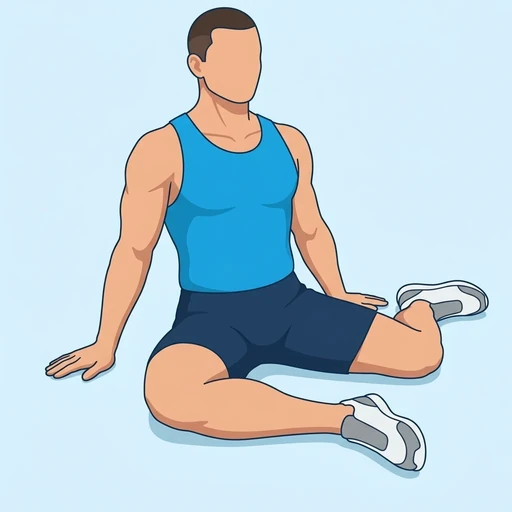

90/90 Hold
A seated hip mobility hold: both knees are bent to about 90 degrees, one leg in front of you and turned out, the other out to the side and turned in. Holding the position with your trunk upright stretches the outer hip of the front leg and the front of the hip of the back leg.
Upper legs · Bodyweight · Beginner

Muscles worked by the 90/90 Hold
Primary
Secondary
Also called: hip flexor, iliopsoas, psoas, iliacus, hip flexors.
Equipment
No equipment — this is a bodyweight exercise.
How to do the 90/90 Hold
- Sit on the floor and bend your front leg in front of you so your shin runs across your body and your knee is bent to about 90 degrees.
- Place your back leg out to the side with that knee also bent to about 90 degrees, shin pointing back.
- Put your hands on the floor beside your hips for support.
- Sit up tall, with your chest lifted and both sitting bones as close to the floor as you can manage.
- Hold the position, breathing slowly, feeling the stretch in the outer hip of the front leg and the front of the hip of the back leg.
- Hold for the planned time, then switch the legs and hold on the other side.
Form tips
- Keep the trunk upright; slumping takes the stretch out of the hips.
- If the hips are tight, keep more weight on your hands or sit on a folded towel until you can sit taller.
- Ease into the stretch and do not force the knees down; the position should feel strong, not painful.
At a glance
| Body part | Upper legs |
|---|---|
| Category | Stretching |
| Force type | Static |
| Mechanic | Compound |
| Difficulty | Beginner |
| Equipment | Bodyweight |
| Goals | Mobility |
| Tags | Mobility, Stretching |
| MET | 5.0 (metabolic equivalent, for calorie estimates) |
| Unilateral | Yes |
| Bodyweight | Yes |
| Dataset id | 90-90-hold |
90/90 Hold in German & Spanish
| German | 90/90-Sitz |
|---|---|
| Spanish | Estiramiento 90/90 |
Descriptions, instructions and tips ship in all three languages in the JSON.
Related exercises
Exercise data (JSON)
The record below is exactly what exercises.json ships for this exercise — names, descriptions, instructions and tips in English, German and Spanish.
{
"id": "90-90-hold",
"name_en": "90/90 Hold",
"name_de": "90/90-Sitz",
"name_es": "Estiramiento 90/90",
"description_en": "A seated hip mobility hold: both knees are bent to about 90 degrees, one leg in front of you and turned out, the other out to the side and turned in. Holding the position with your trunk upright stretches the outer hip of the front leg and the front of the hip of the back leg.",
"description_de": "Eine Halteposition im Sitzen für die Hüftmobilität: Beide Knie sind etwa 90 Grad gebeugt, ein Bein liegt vor dir und ist nach außen rotiert, das andere liegt seitlich und ist nach innen rotiert. Hältst du die Position mit aufrechtem Oberkörper, dehnt sie die äußere Hüfte des vorderen Beins und die Hüftvorderseite des hinteren Beins.",
"description_es": "Una postura de movilidad de cadera que se mantiene sentado en el suelo: las dos rodillas flexionadas a unos 90 grados, una pierna delante de ti y girada hacia fuera, y la otra a un lado y girada hacia dentro. Mantener la posición con el tronco erguido estira la parte externa de la cadera de la pierna delantera y la parte anterior de la cadera de la pierna trasera.",
"category": "stretching",
"force_type": "static",
"mechanic": "compound",
"difficulty": "beginner",
"body_part": "upper_legs",
"primary_muscles": [
"hip_flexors"
],
"secondary_muscles": [
"gluteus_maximus",
"gluteus_medius"
],
"goals": [
"mobility"
],
"tags": [
"mobility",
"stretching"
],
"is_unilateral": true,
"is_bodyweight": true,
"instructions_en": [
"Sit on the floor and bend your front leg in front of you so your shin runs across your body and your knee is bent to about 90 degrees.",
"Place your back leg out to the side with that knee also bent to about 90 degrees, shin pointing back.",
"Put your hands on the floor beside your hips for support.",
"Sit up tall, with your chest lifted and both sitting bones as close to the floor as you can manage.",
"Hold the position, breathing slowly, feeling the stretch in the outer hip of the front leg and the front of the hip of the back leg.",
"Hold for the planned time, then switch the legs and hold on the other side."
],
"instructions_de": [
"Setze dich auf den Boden und beuge das vordere Bein vor dir, sodass dein Schienbein quer vor dem Körper liegt und das Knie etwa 90 Grad gebeugt ist.",
"Lege das hintere Bein seitlich ab, das Knie ebenfalls etwa 90 Grad gebeugt und das Schienbein nach hinten zeigend.",
"Stütze dich mit den Händen neben den Hüften auf dem Boden ab.",
"Richte dich auf, die Brust angehoben und beide Sitzbeinhöcker so nah am Boden, wie du es schaffst.",
"Halte die Position und atme langsam; du spürst die Dehnung in der äußeren Hüfte des vorderen Beins und an der Hüftvorderseite des hinteren Beins.",
"Halte für die geplante Zeit, wechsle dann die Beine und halte auf der anderen Seite."
],
"instructions_es": [
"Siéntate en el suelo y flexiona la pierna delantera delante de ti, de modo que la espinilla quede cruzada frente al cuerpo y la rodilla flexionada a unos 90 grados.",
"Coloca la pierna trasera a un lado, con esa rodilla también flexionada a unos 90 grados y la espinilla apuntando hacia atrás.",
"Apoya las manos en el suelo a los lados de las caderas para sostenerte.",
"Siéntate erguido, con el pecho elevado y ambos isquiones lo más cerca del suelo que puedas.",
"Mantén la posición respirando despacio y nota el estiramiento en la parte externa de la cadera de la pierna delantera y en la parte anterior de la cadera de la pierna trasera.",
"Mantén la postura durante el tiempo previsto; luego intercambia las piernas y mantenla del otro lado."
],
"tips_en": [
"Keep the trunk upright; slumping takes the stretch out of the hips.",
"If the hips are tight, keep more weight on your hands or sit on a folded towel until you can sit taller.",
"Ease into the stretch and do not force the knees down; the position should feel strong, not painful."
],
"tips_de": [
"Halte den Oberkörper aufrecht; sackst du zusammen, geht die Dehnung aus der Hüfte verloren.",
"Ist die Hüfte steif, verlagere mehr Gewicht auf die Hände oder setze dich auf ein gefaltetes Handtuch, bis du aufrechter sitzen kannst.",
"Gehe behutsam in die Dehnung und drücke die Knie nicht mit Gewalt nach unten; die Position soll sich intensiv anfühlen, nicht schmerzhaft."
],
"tips_es": [
"Mantén el tronco erguido; si te encorvas, el estiramiento deja de llegar a las caderas.",
"Si tienes las caderas rígidas, carga más peso en las manos o siéntate sobre una toalla doblada hasta que puedas sentarte más erguido.",
"Entra en el estiramiento poco a poco y no fuerces las rodillas hacia el suelo; la posición debe sentirse intensa, pero no dolorosa."
],
"met": 5.0,
"images": {
"flat": {
"main": "images/flat/90-90-hold-main.webp"
}
}
}Fetch just this exercise
const { exercises } = await fetch(
"https://exercise-dataset.com/exercises.json"
).then(r => r.json());
const ex = exercises.find(e => e.id === "90-90-hold");Free for personal and commercial in-app use with attribution (“Exercise data by RepDB”) — see the license and ready-made attribution snippets. Redistributing the data as a dataset or API is not permitted.